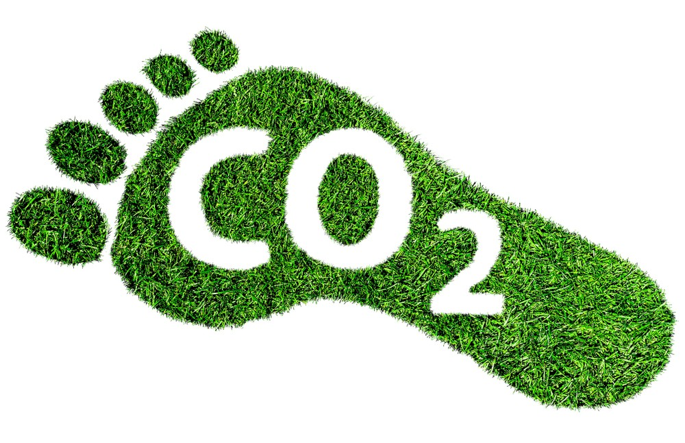
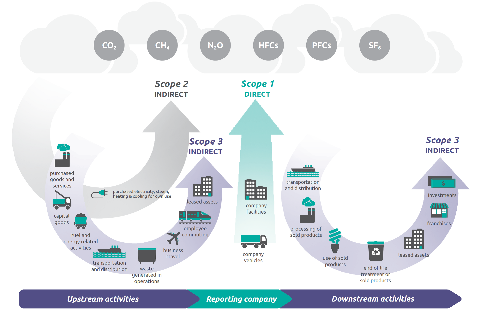

What is Carbon Footprint?
A carbon footprint is a measure of the total amount of greenhouse gases, specifically carbon dioxide (CO2) and other carbon compounds,
that are emitted directly or indirectly by an individual, organization, event, or product throughout its lifecycle. It is expressed
in terms of equivalent tons of CO2 emitted per year. The concept of a carbon footprint is used to quantify the impact of human
activities on the environment, particularly in terms of contributing to climate change.
Key components of a carbon footprint include:
1.Direct Emissions (Scope 1):
These are emissions that occur directly from sources
owned or controlled by the entity. Examples include emissions from on-site combustion of fossil fuels for heating or
transportation.
2.Indirect Emissions from Energy Use (Scope 2):
These are emissions from the generation of purchased energy,
such as electricity. They are indirect because the entity does not own or control the emission source but is responsible for the
emissions resulting from its energy consumption.
3.Indirect Emissions from Supply Chain and Other Activities (Scope 3):
These are emissions that occur in the supply chain and
other activities related to the entity but are outside of its direct control. This includes emissions from the production of
goods, transportation, and disposal of waste.
The carbon footprint can be calculated for various
entities, including individuals, businesses, events, and products. Some common methods for calculating carbon footprints
involve considering energy consumption, travel habits, waste generation, and other activities that release greenhouse gases
into the atmosphere.
Reducing a carbon footprint is a key aspect of sustainability efforts. Strategies for reducing carbon footprints include energy efficiency
measures, transitioning to renewable energy sources, improving transportation efficiency, and adopting sustainable practices in the supply chain.
The concept of a carbon footprint is closely tied to the broader goal of mitigating climate change by reducing overall greenhouse gas emissions.
Many individuals and organizations are taking steps to calculate, understand, and reduce their carbon footprints as part of broader efforts to
address environmental sustainability and climate action.

How to Reduce The Carbon Footprint
1. Energy Efficiency:
Use energy-efficient appliances and lighting.
Upgrade insulation and windows to improve home energy efficiency.
Consider installing a programmable thermostat.
2. Renewable Energy Sources:
Invest in renewable energy options, such as solar panels or wind turbines.
Choose a green energy provider that sources electricity from renewable sources.
3. Transportation:
Use public transportation, carpool, or rideshare to reduce individual car emissions.
Choose fuel-efficient or electric vehicles.
Walk, bike, or use electric scooters for short trips.
4. Reduce, Reuse, Recycle:
Minimize waste by opting for products with minimal packaging.
Practice recycling for paper, plastic, glass, and other materials.
Reuse items when possible, and support second-hand markets.
5. Sustainable Diet:
Choose locally produced and seasonal foods to reduce the carbon footprint of transportation.
Reduce meat consumption or choose plant-based options.
Minimize food waste by planning meals and storing food properly.
6. Water Conservation:
Fix leaks and use water-saving appliances.
Collect rainwater for watering plants.
Be mindful of water usage in daily activities.
7. Green Landscaping:
Plant trees and maintain green spaces.
Choose native plants that require less water.
Compost organic waste instead of sending it to landfills.
8. Sustainable Shopping:
Choose products with minimal environmental impact.
Look for eco-friendly certifications and labels.
Consider second-hand or refurbished items.
9. Education and Advocacy:
Stay informed about climate change issues and solutions.
Advocate for policies that promote sustainability at local, national, and global levels.
10. Telecommuting and Remote Work:
Encourage telecommuting to reduce commuting-related emissions.
Implement flexible work schedules to reduce transportation needs.
11. Carbon Offsetting:
Consider investing in carbon offset programs that support projects aimed at
reducing or capturing greenhouse gas emissions.
12. Eco-Friendly Technology:
Choose energy-efficient electronic devices.
Recycle old electronics responsibly.
Support companies with sustainable technology practices.
13. Community Engagement:
Participate in local environmental initiatives and clean-up events.
Join or support community projects focused on sustainability.
14. Carbon Footprint Calculators:
Use online calculators to assess your carbon footprint and identify areas for improvement.
Set goals for reducing your carbon footprint over time.
15. Green Building Practices:
Design and construct buildings with energy-efficient features.
Use sustainable materials in construction and renovation projects.
16. Support Sustainable Policies:
Advocate for and support policies that promote renewable energy, energy efficiency,
and sustainable practices at various levels of government.
Carbon Footprint Calculator